25+ Easy New Year's Eve Appetizers for a Crowd
📌 Save to Pinterest
New Year's Eve is the one night of the year when the appetizers are the meal: small bites, passed around and piled on plates, while everyone counts down together. This roundup gathers twenty-five easy New Year's Eve appetizers for a crowd — dips, skewers, sliders, meatballs and finger foods — all made to feed a room full of guests without keeping you in the kitchen. Make the dips and the slow-cooker meatballs ahead, bake the hot bites as guests arrive, and the table takes care of itself.
How to plan a New Year's Eve appetizer table
Pick a mix, not a single style: two or three dips for grazing, a few hot bites that come out of the oven in batches, and a few no-cook plates — skewers, roll-ups and stuffed dates — that wait in the fridge until you need them. If the night is long, lean on slow-cooker recipes like the grape jelly meatballs, which stay warm all evening. And if you want the table to feel like a party before midnight, set it with gold and black — dark napkins, gold platters and a few candles — and let the food do the rest.
Good to know: Everything is written in American English, and measurements use US customary units — cups, tablespoons, and Fahrenheit — for cooks in the United States. Always follow safe food-handling guidance, and check labels for allergens when cooking for others.
Food safety: cook poultry to 165°F (74°C) and ground beef to 160°F (71°C). Cook beef tenderloin to 145°F (63°C) and let it rest for 3 minutes. Check with a food thermometer.
Elegant starters & party dips
Start with the showpieces — chilled shrimp, flaky pastry and salmon blini — then set out two dips so guests can graze while the first drinks are poured.
1. Classic Shrimp Cocktail Cups

Plump shrimp poached in Old Bay water turn pink and tender, then chill in ice water so they stay firm and sweet. Each little cup holds a few shrimp with a spoonful of cocktail sauce sharpened with horseradish, a lemon wedge, and a sprinkle of parsley. They are cold, bright, and elegant, the classic New Year's Eve opener that guests can pick up with one hand while holding a glass in the other.
Ingredients
- 1 lb large shrimp, peeled and deveined
- 1 cup cocktail sauce
- 1 tbsp prepared horseradish
- 1 lemon, cut into wedges
- fresh parsley
- 1 tbsp Old Bay seasoning
Directions
- Fill a large pot with water, stir in the Old Bay seasoning, and bring it to a rolling boil over high heat.
- Add the shrimp and cook for 2 minutes, just until they curl and turn pink all the way through. Do not overcook them or they will turn rubbery.
- Scoop the shrimp out with a slotted spoon and drop them straight into a large bowl of ice water. Let them chill for 5 minutes, then drain well and pat dry.
- In a small bowl, stir the prepared horseradish into the cocktail sauce until it is evenly mixed.
- Spoon a little of the spiced cocktail sauce into the bottom of each small cup.
- Arrange 3 or 4 shrimp in each cup, draped over the rim so they look inviting.
- Tuck a lemon wedge into each cup and sprinkle with chopped fresh parsley. Serve chilled.
2. Mini Beef Wellington Bites
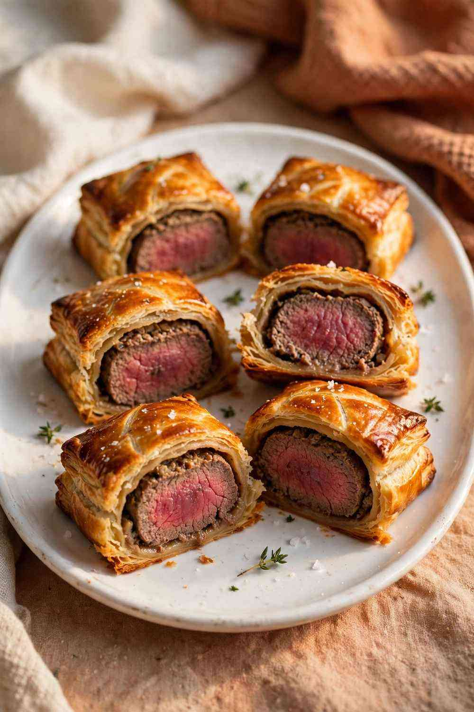
Tender beef tenderloin seared on all sides, brushed with sharp Dijon mustard, and wrapped in a mushroom duxelles and golden puff pastry. Each bite slices open to show a rosy pink center inside flaky, buttery layers. They look like a special-occasion dish and taste like one too, yet they come together from a handful of ingredients and bake in just twenty minutes.
Ingredients
- 1 lb beef tenderloin
- 1 sheet puff pastry
- 1 cup finely chopped mushrooms
- 2 tbsp Dijon mustard
- 1 egg, beaten
- salt and pepper
Directions
- Pat the beef tenderloin dry and season it all over with salt and pepper.
- Sear the beef in a hot, lightly oiled skillet over high heat, turning it every minute or so, until browned on all sides, about 6 to 8 minutes total. Let it cool for 10 minutes, then brush it all over with the Dijon mustard.
- Cook the finely chopped mushrooms in the same skillet over medium heat, stirring often, until they give up their moisture and turn dry and dark, about 8 minutes. Season lightly and let them cool.
- Spread the cooked mushrooms evenly over the top and sides of the beef.
- Roll out the puff pastry on a lightly floured surface and wrap it snugly around the beef, sealing the edges and trimming any extra pastry. Place it seam-side down on a lined baking sheet.
- Brush the pastry all over with the beaten egg and cut a few small slits in the top so steam can escape.
- Bake at 400°F for 20 minutes, until the pastry is deep golden brown and puffed. Rest 5 minutes, then slice into bite-size pieces and serve warm.
Food safety: cook the beef to 145°F (63°C) and let it rest for 3 minutes before slicing.
3. Smoked Salmon Blini with Dill Cream

Little golden blini, about two inches wide, get topped with a cool dill and lemon cream, folds of silky smoked salmon, and salty capers. Each bite is soft, smoky, and fresh, with the dill cream cutting through the richness of the salmon. They are the most elegant finger food on the table and take only minutes to assemble once the blini are made.
Ingredients
- 1 cup pancake mix
- 8 oz smoked salmon
- 1/2 cup sour cream
- 2 tbsp chopped dill
- 1 tbsp lemon juice
- capers
Directions
- Prepare the pancake mix batter according to the package directions, keeping it thick enough to hold a small round shape.
- Heat a buttered griddle or large skillet over medium heat. Spoon about 1 tablespoon of batter per blini onto the griddle, making rounds about 2 inches wide, and leave space between them.
- Cook for 1 to 2 minutes per side, until golden brown and cooked through. Transfer to a plate and let them cool slightly. Repeat with the remaining batter.
- In a small bowl, whisk the sour cream with the chopped dill and lemon juice until smooth.
- Spread a spoonful of the dill cream over each warm blini.
- Fold a piece of smoked salmon loosely over the cream on each blini.
- Scatter a few capers over the top and serve at once, while the blini are still slightly warm.
4. Buffalo Chicken Dip
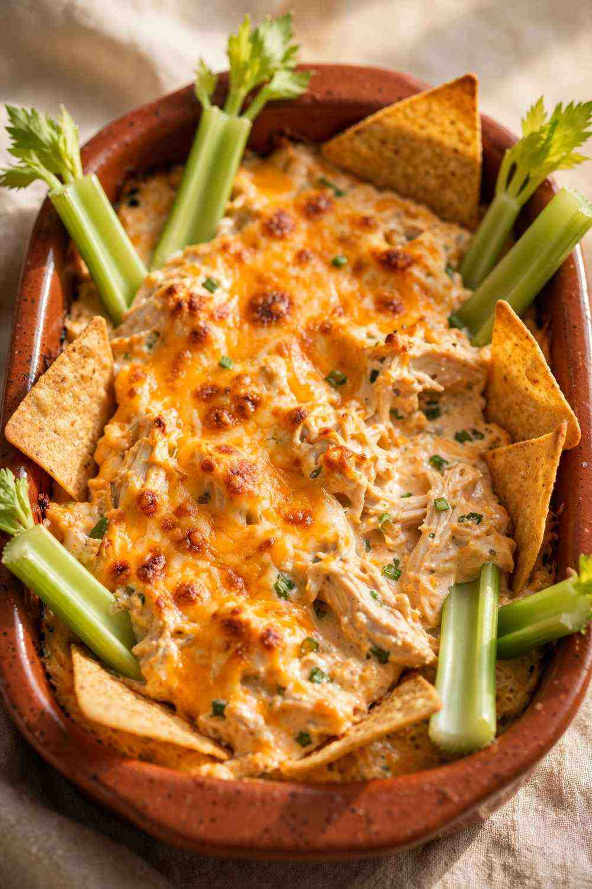
Shredded chicken folded into cream cheese, tangy buffalo sauce, and ranch dressing bakes under a blanket of melted cheddar until it is hot, bubbly, and scoopable. It is creamy, spicy, and unapologetically crowd-pleasing, the dip that empties first at any party. Serve it straight from the oven with celery sticks and tortilla chips for scooping.
Ingredients
- 2 cups shredded cooked chicken
- 8 oz cream cheese
- 1/2 cup buffalo sauce
- 1/2 cup ranch dressing
- 1 cup shredded cheddar
Directions
- Preheat the oven to 350°F and set out a baking dish.
- Soften the cream cheese in the microwave for 20 to 30 seconds, until it is easy to stir.
- In the baking dish, mix the shredded chicken, softened cream cheese, buffalo sauce, and ranch dressing until everything is evenly combined.
- Spread the mixture into an even layer and sprinkle the shredded cheddar over the top.
- Bake for 20 minutes, until the dip is hot and bubbly around the edges and the cheddar is fully melted.
- Let it rest for 5 minutes so it firms up just enough to scoop.
- Serve warm, with celery sticks and tortilla chips alongside for dipping.
5. Seven-Layer Taco Dip

Refried beans, seasoned sour cream, guacamole, salsa, cheddar, black olives, and green onions stack up in colorful layers in a glass dish, so every scoop catches a little of everything. It is cool, creamy, and crunchy all at once, and it needs no cooking at all. Chill it for half an hour, set out the chips, and it is ready for the party.
Ingredients
- 1 can (16 oz) refried beans
- 1 cup sour cream
- 1 packet taco seasoning
- 1 cup guacamole
- 1 cup salsa
- 1 cup shredded cheddar
- 1/2 cup sliced black olives
- 2 green onions
Directions
- Spread the refried beans in an even layer across the bottom of a serving dish, smoothing the top with the back of a spoon.
- In a small bowl, stir the sour cream with the taco seasoning until smooth and evenly mixed.
- Spread the seasoned sour cream gently over the beans, taking care not to mix the layers together.
- Spoon the guacamole over the sour cream and spread it into an even layer.
- Spoon the salsa over the guacamole and spread it evenly.
- Sprinkle the shredded cheddar over the top, then scatter the sliced black olives and the thinly sliced green onions over the cheese.
- Cover and chill for 30 minutes before serving, so the layers set and the flavors come together. Serve with tortilla chips.
Warm dips, poppers & skewers
The warm, scoopable half of the table: baked dips, crispy poppers, golden crab cakes and grilled skewers.
6. Jalapeño Popper Dip
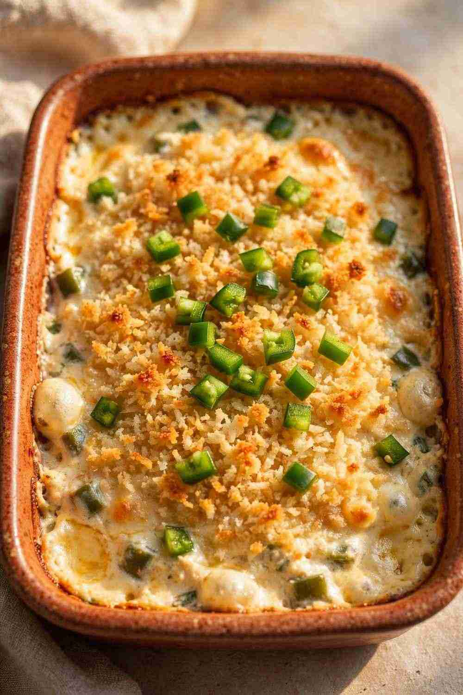
Everything you love about a jalapeño popper — creamy cheese, a little heat, and a crunchy topping — scooped out of a baking dish instead of stuffed into peppers. Cream cheese, cheddar, and mayonnaise bake with diced jalapeños under a buttery panko crust that turns golden and crisp. It is warm, rich, and scoopable, with just enough spice to keep guests coming back.
Ingredients
- 8 oz cream cheese
- 1 cup shredded cheddar
- 1/2 cup mayonnaise
- 4 jalapeños, seeded and diced
- 1/2 cup panko breadcrumbs
- 2 tbsp melted butter
Directions
- Preheat the oven to 375°F and set out a baking dish.
- Soften the cream cheese in the microwave for 20 to 30 seconds, until it is easy to stir.
- In the baking dish, mix the softened cream cheese, shredded cheddar, mayonnaise, and diced jalapeños until everything is evenly combined.
- Spread the mixture into an even layer.
- In a small bowl, toss the panko breadcrumbs with the melted butter until the crumbs are evenly coated.
- Sprinkle the buttered panko evenly over the top of the dip.
- Bake for 20 minutes, until the topping is golden brown and the dip is hot and bubbly at the edges. Let it rest 5 minutes, then serve warm with chips or toasted bread.
7. Warm Crab Dip
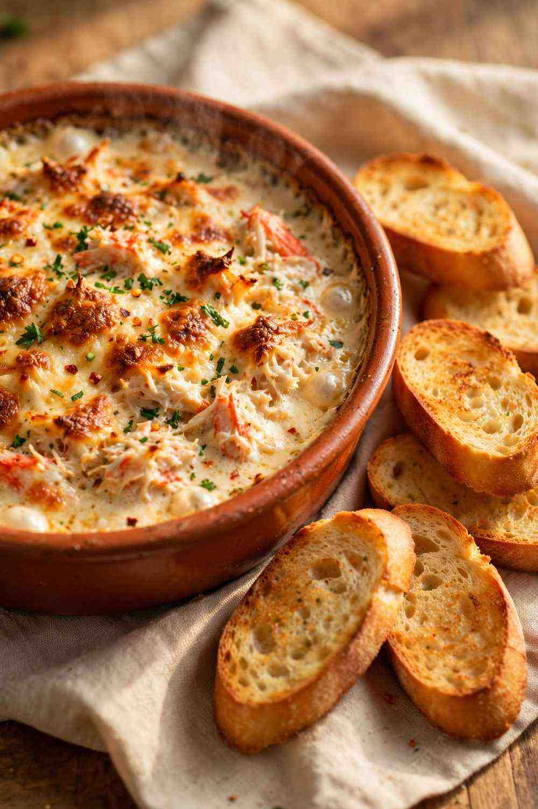
Sweet lump crab meat folds into cream cheese, mayonnaise, and Parmesan with lemon and Old Bay, then bakes until it is hot, bubbly, and rich. It tastes like a fancy seafood appetizer but comes together in one dish and one bake. Serve it straight from the oven with toasted baguette slices, and let guests scoop it while it is still warm.
Ingredients
- 8 oz lump crab meat
- 8 oz cream cheese
- 1/2 cup mayonnaise
- 1/2 cup grated Parmesan
- 1 tbsp lemon juice
- 1 tsp Old Bay seasoning
Directions
- Preheat the oven to 350°F and set out a baking dish.
- Soften the cream cheese in the microwave for 20 to 30 seconds, until it is easy to stir.
- Pick through the lump crab meat gently and remove any bits of shell, keeping the lumps as whole as you can.
- In the baking dish, mix the cream cheese, mayonnaise, grated Parmesan, lemon juice, and Old Bay seasoning until smooth.
- Fold in the crab meat gently, so the lumps stay intact.
- Spread the mixture into an even layer and bake for 25 minutes, until it is hot and bubbly all the way through.
- Let it rest for 5 minutes, then serve warm with toasted baguette slices.
8. Bacon-Wrapped Jalapeño Poppers
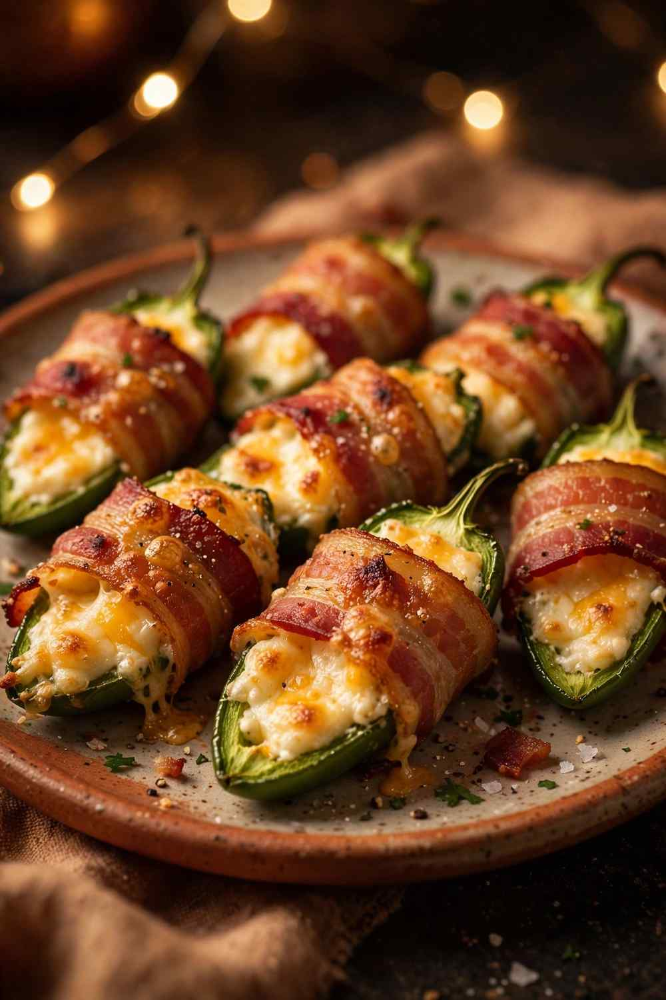
Halved jalapeños stuffed with cream cheese and cheddar get wrapped in bacon and baked until the bacon turns crisp and the filling is hot and melty. Each popper is smoky, creamy, and just spicy enough, with the crisp bacon giving way to a soft, cheesy center. They are the kind of bite that disappears from the tray before you have finished setting it down.
Ingredients
- 12 jalapeños, halved and seeded
- 8 oz cream cheese
- 1 cup shredded cheddar
- 12 slices bacon, cut in half
Directions
- Preheat the oven to 400°F and line a baking sheet with foil or parchment paper.
- Cut the jalapeños in half lengthwise and scoop out the seeds and white ribs with a small spoon. Wear gloves if your skin is sensitive to heat.
- In a bowl, stir the cream cheese and shredded cheddar together until well mixed.
- Spoon the cheese mixture into each jalapeño half, filling it level with the edges.
- Wrap each filled half with a half slice of bacon, tucking the ends underneath, and secure it with a toothpick.
- Arrange the poppers on the baking sheet, cut side up, with space between them.
- Bake for 20 minutes, until the bacon is crisp and the cheese is bubbling. Let them cool for 5 minutes, then serve warm.
Food safety: cook the bacon until crisp.
9. Mini Crab Cakes with Remoulade
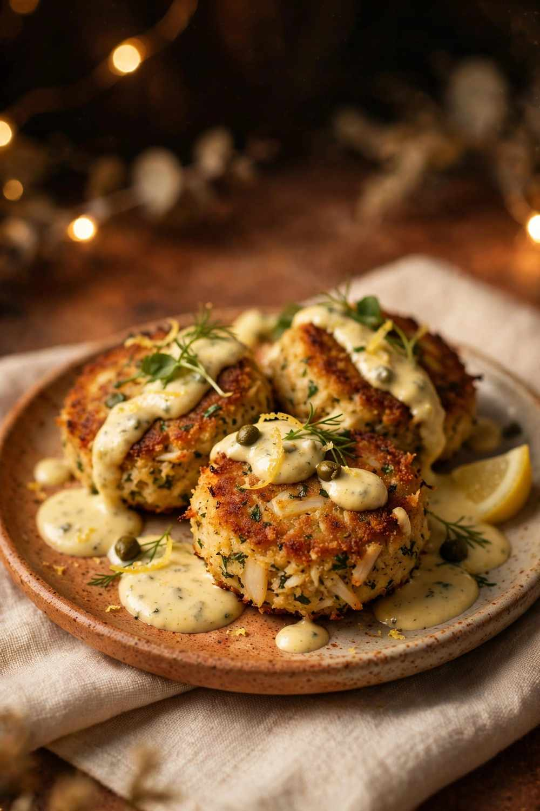
Lump crab meat bound with breadcrumbs, egg, and mayonnaise forms small patties that pan-fry to a crisp golden crust with a tender, sweet center. A quick remoulade of mayonnaise, lemon, and Cajun seasoning adds a tangy kick alongside. They are small enough for one bite each, yet rich and impressive enough to anchor the elegant end of the appetizer table.
Ingredients
- 1 lb lump crab meat
- 1/2 cup breadcrumbs
- 1 egg
- 2 tbsp mayonnaise
- 1 tbsp Dijon mustard
- 1/2 cup mayonnaise for remoulade
- 1 tbsp lemon juice
- 1 tsp Cajun seasoning
Directions
- Pick through the lump crab meat gently and remove any bits of shell, keeping the lumps as whole as you can.
- In a large bowl, whisk the egg with the 2 tablespoons of mayonnaise and the Dijon mustard.
- Add the crab meat and the breadcrumbs and fold gently until just combined. Do not overmix or the cakes will turn dense.
- Shape the mixture into small patties, about 2 inches across, and set them on a plate. Chill for 15 minutes so they hold together in the pan.
- Heat a thin layer of oil in a large skillet over medium-high heat. Pan-fry the patties in batches, 3 minutes per side, until golden brown and crisp.
- Drain the cakes briefly on paper towels.
- Whisk the remaining 1/2 cup of mayonnaise with the lemon juice and Cajun seasoning for the remoulade, and serve it alongside the warm crab cakes.
10. Chicken Satay Skewers with Peanut Sauce
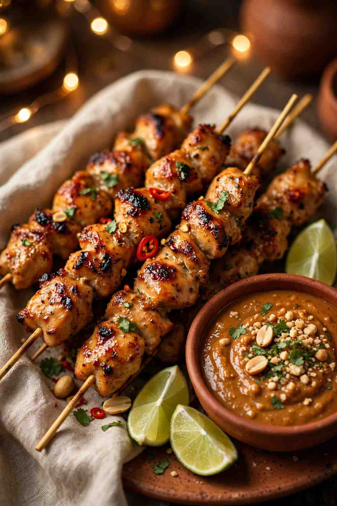
Chicken tenders marinate in soy sauce, peanut butter, honey, lime, and curry powder, then grill on skewers until charred at the edges and juicy inside. The marinade doubles as flavor and glaze, and the peanut sauce for dipping is rich, nutty, and just sweet enough. They are made to be picked up by the stick and eaten standing up, which is exactly how a New Year's Eve party works.
Ingredients
- 1 1/2 lbs chicken tenders
- 1/4 cup soy sauce
- 2 tbsp peanut butter
- 1 tbsp honey
- 1 tbsp lime juice
- 1 tsp curry powder
- 1/2 cup peanut sauce for dipping
Directions
- In a large bowl, whisk together the soy sauce, peanut butter, honey, lime juice, and curry powder until smooth.
- Add the chicken tenders and turn them in the marinade until every piece is coated.
- Cover and marinate in the refrigerator for 30 minutes.
- If you are using wooden skewers, soak them in water for 30 minutes so they do not burn on the grill.
- Thread the marinated chicken onto the skewers, folding each tender into a loose S shape so it cooks evenly.
- Grill over medium-high heat for 3 minutes per side, until the chicken is cooked through and lightly charred at the edges.
- Rest the skewers for 2 minutes, then serve warm with the peanut sauce for dipping.
Food safety: cook the chicken to 165°F (74°C) — check with a food thermometer.

Meatballs, sliders & party classics
The hearty bites — meatballs, sliders, deviled eggs, stuffed dates and wings — the ones guests come back for.
11. Sticky Teriyaki Meatballs
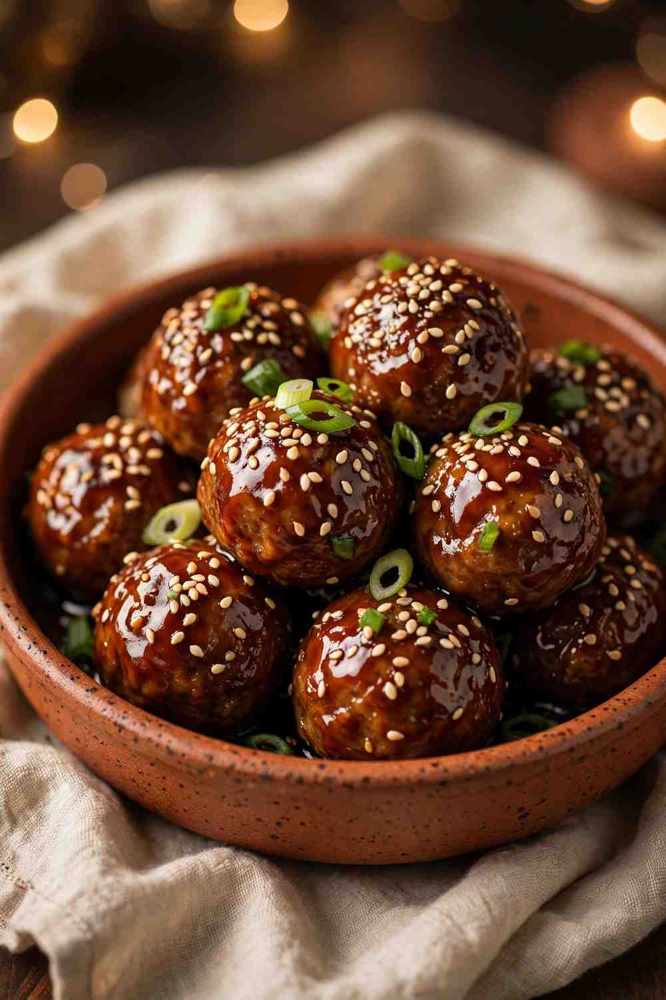
Ground beef mixed with breadcrumbs, egg, and green onions rolls into one-inch balls, bakes until browned, and then gets tossed in warm teriyaki sauce until every meatball is glossy and sticky. A sprinkle of sesame seeds finishes them. They are sweet, savory, and exactly one bite each, made for toothpicks and for guests to keep coming back to the tray.
Ingredients
- 1 lb ground beef
- 1/2 cup breadcrumbs
- 1 egg
- 2 green onions
- 1/2 cup teriyaki sauce
- 1 tbsp sesame seeds
Directions
- Preheat the oven to 400°F and line a baking sheet with parchment paper.
- In a large bowl, mix the ground beef, breadcrumbs, egg, and finely chopped green onions with your hands until just combined. Do not overwork the mixture or the meatballs will turn tough.
- Roll the mixture into 1-inch balls and arrange them on the baking sheet, leaving a little space between them.
- Bake for 15 minutes, until the meatballs are browned and cooked through.
- While the meatballs bake, warm the teriyaki sauce in a small saucepan over low heat until it is hot and pourable.
- Transfer the hot meatballs to a large bowl, pour the warm teriyaki sauce over them, and toss gently until every meatball is coated.
- Sprinkle with the sesame seeds and serve warm, with toothpicks alongside.
Food safety: cook the ground beef to 160°F (71°C) — check with a food thermometer.
12. Mini Sliders with Caramelized Onions

Small beef patties cook until juicy and get stacked on soft slider buns with melted cheddar, sweet caramelized onions, and crisp pickles. The onions take their time on low heat until they turn deep golden and jammy, which is what makes these little burgers taste like so much more than their size. They are the hearty bite guests reach for between drinks.
Ingredients
- 1 lb ground beef
- 12 slider buns
- 2 onions, sliced
- 2 tbsp butter
- 6 slices cheddar, cut in quarters
- pickles
Directions
- Melt the butter in a large skillet over low heat and add the sliced onions with a pinch of salt.
- Cook the onions slowly over low heat, stirring every few minutes, for 20 minutes, until they are soft, sweet, and deep golden brown. Set them aside.
- Divide the ground beef into 12 small portions and shape each into a thin patty, slightly wider than the buns, since they shrink as they cook. Season with salt and pepper.
- Cook the patties in a hot skillet over medium-high heat for 3 minutes per side, until browned and cooked through.
- Place a quarter slice of cheddar on each patty during the last minute of cooking so it melts.
- Lightly toast the slider buns if you like, then set a patty on each bottom bun.
- Top each slider with a spoonful of caramelized onions and a pickle slice, add the top bun, and serve warm.
Food safety: cook the ground beef to 160°F (71°C) — check with a food thermometer.
13. Deviled Eggs with Smoked Paprika

Hard-boiled eggs halve and fill with a creamy mash of yolks, mayonnaise, Dijon mustard, and sweet pickle relish, then get dusted with smoked paprika and a scatter of chives. They are cool, rich, and tangy, the party classic that never goes out of style, dressed up just enough for New Year's Eve with the smoky red spice on top.
Ingredients
- 12 eggs
- 1/2 cup mayonnaise
- 1 tbsp Dijon mustard
- 1 tbsp sweet pickle relish
- smoked paprika
- chopped chives
Directions
- Place the eggs in a large saucepan and cover them with cold water by about an inch.
- Bring the water to a boil over high heat, then cover the pan, remove it from the heat, and let the eggs stand for 10 minutes.
- Drain the eggs and transfer them to a bowl of ice water. Let them cool completely, about 10 minutes, then peel them.
- Halve the eggs lengthwise and pop the yolks into a bowl. Arrange the whites on a serving platter.
- Mash the yolks with a fork, then stir in the mayonnaise, Dijon mustard, and sweet pickle relish until smooth and creamy. Season with a pinch of salt.
- Spoon or pipe the yolk mixture back into the egg white halves, mounding it slightly.
- Dust each egg with smoked paprika and sprinkle with chopped chives. Chill until serving.
14. Blue Cheese and Walnut Stuffed Dates
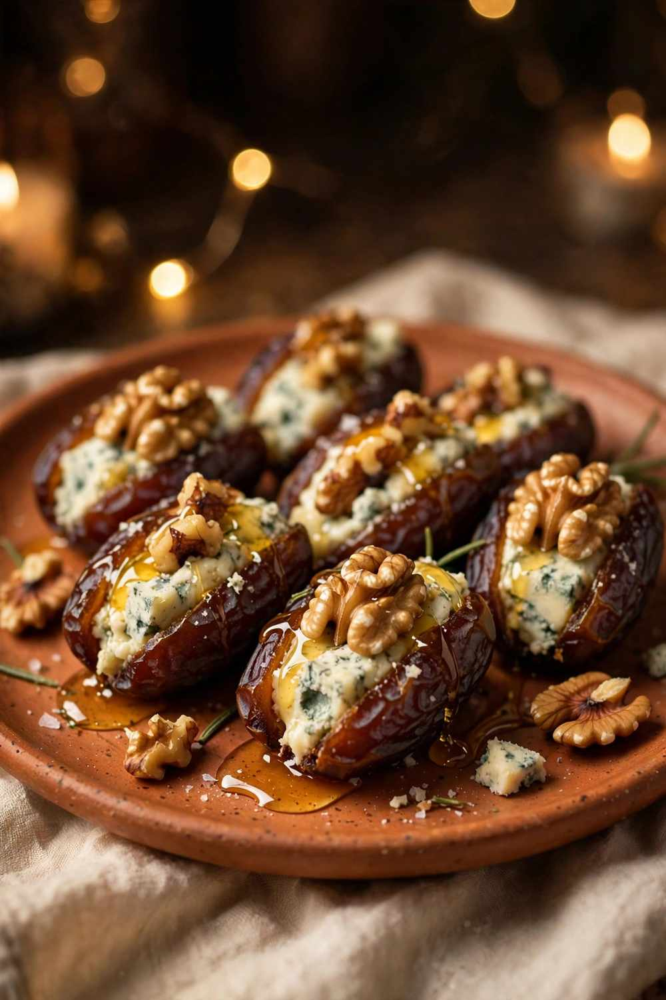
Soft, sweet Medjool dates open up and fill with tangy blue cheese and a crunchy walnut piece, then get a light drizzle of honey. The combination is sweet, salty, and crunchy all in one bite, with no cooking at all. They are the quiet luxury of the appetizer table, small and rich, and they pair beautifully with a glass of sparkling wine at midnight.
Ingredients
- 24 pitted Medjool dates
- 4 oz blue cheese
- 1/2 cup chopped walnuts
- 2 tbsp honey
Directions
- Slice each date open lengthwise with a small knife, stopping before you cut all the way through.
- If any pits remain, remove them carefully and discard them.
- Crumble the blue cheese into small pieces and press a spoonful into the open center of each date.
- Tuck a piece of walnut into the cheese in each date, pressing it in gently so it stays put.
- Arrange the stuffed dates on a serving platter, cut side up.
- Just before serving, drizzle the honey lightly over the dates in a thin stream.
- Serve at room temperature, so the dates stay soft and the cheese is at its most flavorful.
15. Garlic Parmesan Wings
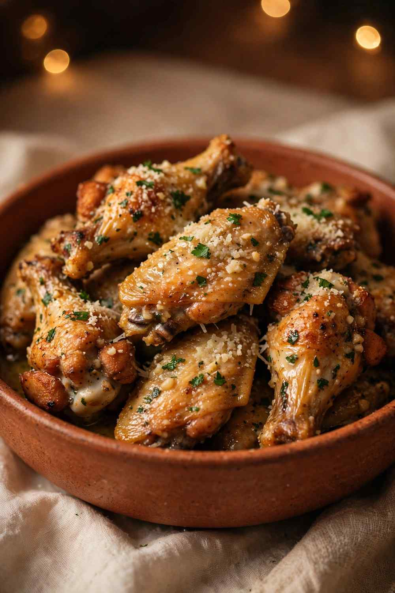
Chicken wings toss in olive oil and garlic powder, then bake in a hot oven until the skin turns crisp and golden, no fryer needed. A toss in melted butter, grated Parmesan, and fresh parsley coats them in a salty, garlicky finish. They are crunchy outside, juicy inside, and made to be eaten with your fingers over a pile of napkins.
Ingredients
- 2 lbs chicken wings
- 2 tbsp olive oil
- 1 tsp garlic powder
- 1/2 cup grated Parmesan
- 3 tbsp melted butter
- parsley
Directions
- Preheat the oven to 425°F and line a baking sheet with foil or parchment paper. Set a wire rack on the sheet if you have one.
- Pat the chicken wings very dry with paper towels, which helps the skin crisp in the oven.
- Toss the wings in a large bowl with the olive oil, garlic powder, salt, and pepper until every wing is coated.
- Arrange the wings in a single layer on the baking sheet, with space between them so they roast instead of steaming.
- Bake for 40 minutes, flipping the wings once halfway through, until they are deep golden brown and the skin is crisp.
- While the wings are still hot, toss them in a large bowl with the melted butter, grated Parmesan, and chopped parsley until evenly coated.
- Serve at once, while the wings are hot and the cheese is clinging to the skin.
Food safety: cook the chicken wings to 165°F (74°C) — check with a food thermometer.
Crispy bites, bruschetta & breads
Crunchy, fresh and baked: calamari, bruschetta, mini tacos, cheesy bread bites and a New Year's classic.
16. Crispy Fried Calamari with Lemon Aioli

Rings of calamari dredged in seasoned flour fry for just two minutes until they turn light, golden, and crisp, with a tender bite inside. A quick aioli of mayonnaise, lemon juice, and garlic gives every ring a cool, tangy dip. They are best served the minute they come out of the oil, piled high with lemon wedges and plenty of napkins.
Ingredients
- 1 lb calamari rings
- 1 cup flour
- 1 tsp paprika
- 1/2 tsp garlic powder
- oil for frying
- 1/2 cup mayonnaise
- 1 tbsp lemon juice
- 1 garlic clove
Directions
- Pat the calamari rings dry with paper towels.
- In a large bowl, whisk together the flour, paprika, and garlic powder with a good pinch of salt and pepper.
- Toss the calamari rings in the seasoned flour a few at a time, shaking off the excess so they have a light, even coating.
- Pour oil into a deep skillet or heavy pot to a depth of about 2 inches and heat it over medium-high heat until it shimmers, around 350°F.
- Fry the calamari in small batches for 2 minutes, until golden brown and crisp. Do not crowd the pan or the oil will cool and the rings will turn soggy.
- Lift the calamari out with a slotted spoon and drain well on paper towels. Season lightly with salt while hot.
- Whisk the mayonnaise with the lemon juice and the finely minced garlic clove for the aioli, and serve it alongside the hot calamari.
17. Tomato Basil Bruschetta
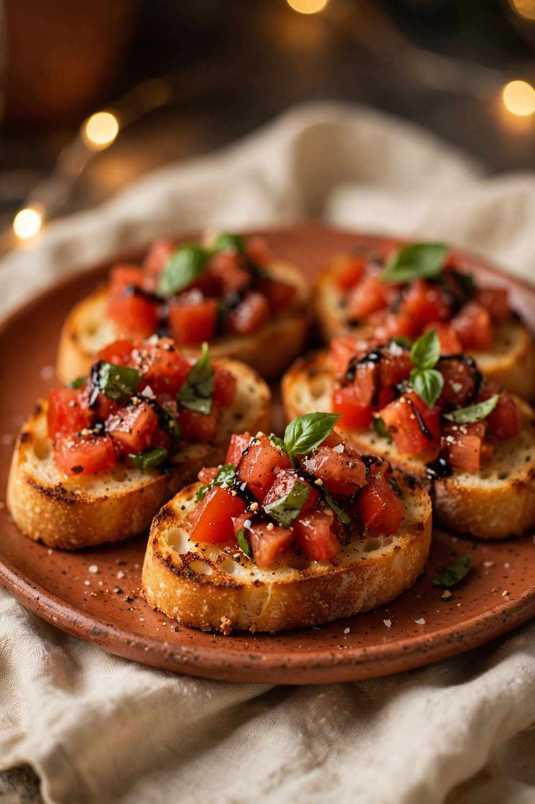
Crisp toasted baguette slices rubbed with garlic hold a fresh topping of diced tomatoes, chopped basil, olive oil, and balsamic vinegar. It is bright, juicy, and summery even in winter, the fresh counterpoint to all the rich, baked bites on the table. Spoon the tomato mixture over the toast just before serving so the bread stays crisp.
Ingredients
- 1 baguette, sliced
- 4 tomatoes, diced
- 1/4 cup chopped basil
- 2 garlic cloves
- 3 tbsp olive oil
- 1 tbsp balsamic vinegar
Directions
- Slice the baguette into 1/2-inch slices and arrange them on a baking sheet.
- Toast the slices under the broiler or in a 400°F oven for 2 to 3 minutes per side, until golden and crisp. Watch them closely so they do not burn.
- Peel one garlic clove and cut it in half crosswise.
- While the toast is still warm, rub each slice firmly with the cut side of the garlic clove.
- In a bowl, toss the diced tomatoes with the chopped basil, olive oil, and balsamic vinegar. Season with salt and pepper and let the mixture sit for 10 minutes so the flavors come together.
- Mince the remaining garlic clove and stir it into the tomato mixture.
- Spoon the tomato topping over the toasted slices just before serving, so the bread stays crisp underneath.
18. Mini Tacos with Salsa Verde

Crunchy mini taco shells fill with seasoned ground beef, shredded lettuce, and cheddar, then get topped with tangy salsa verde and a cool dollop of sour cream. Each one is a two-bite taco, zesty and crunchy, with the green salsa giving it a bright kick. They are quick to fill, easy to hold, and gone fast from the tray.
Ingredients
- 12 mini taco shells
- 1 lb ground beef
- 1 packet taco seasoning
- 1 cup salsa verde
- 1/2 cup shredded lettuce
- 1/2 cup shredded cheddar
- sour cream
Directions
- Brown the ground beef in a large skillet over medium-high heat, breaking it into small crumbles with a spoon, for about 8 minutes, until no pink remains. Drain off the fat.
- Stir in the taco seasoning and 1/4 cup of water, then simmer for 3 to 4 minutes, stirring often, until the sauce thickens and coats the beef.
- While the beef cooks, warm the mini taco shells in a 350°F oven for 3 to 4 minutes, until crisp. Stand them upright in a muffin tin or on a baking sheet so they are easy to fill.
- Spoon the seasoned beef into each shell, filling them about two-thirds full.
- Top each taco with a little shredded lettuce and shredded cheddar.
- Spoon a little salsa verde over each taco.
- Finish with a dollop of sour cream on top of each taco and serve at once, while the shells are still crisp.
Food safety: cook the ground beef to 160°F (71°C) — check with a food thermometer.
19. Cheesy Pull-Apart Bread Bites
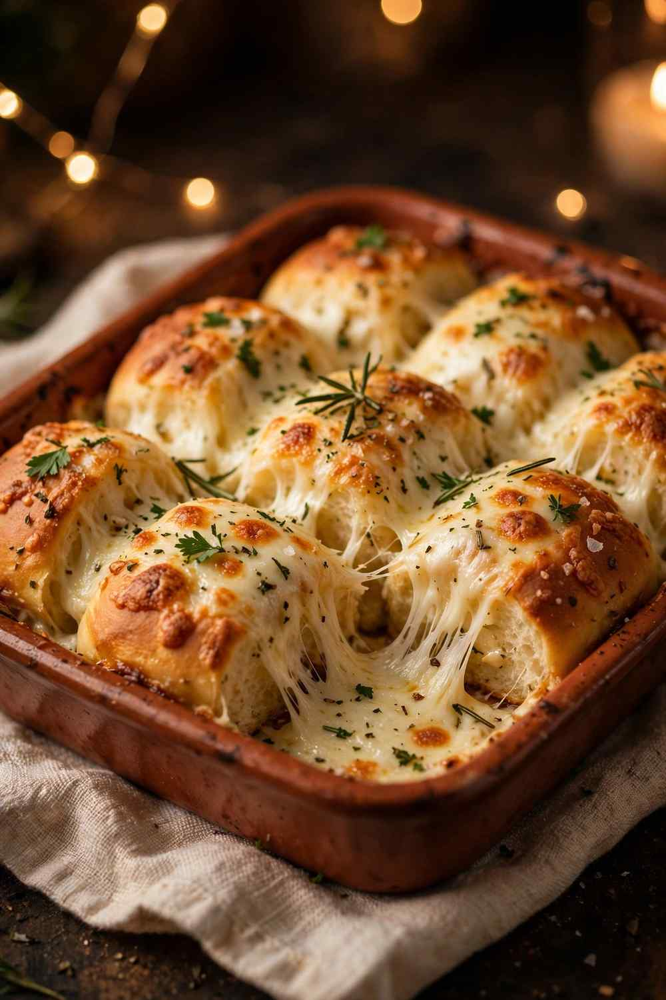
Biscuit dough wraps around cubes of mozzarella and bakes in a dish until the bites turn golden and puffed, with gooey melted cheese hiding in the center of each one. A brush of garlic butter and Italian seasoning over the top makes them smell irresistible when they come out of the oven. Guests pull them apart one by one, and the cheese stretches with every bite.
Ingredients
- 1 can refrigerated biscuit dough
- 8 oz mozzarella, cut into cubes
- 3 tbsp melted butter
- 1 tsp garlic powder
- 1 tsp Italian seasoning
Directions
- Preheat the oven to 350°F and grease a baking dish well with butter or cooking spray.
- Open the can of biscuit dough and separate the biscuits. Flatten each biscuit into a round about 3 inches across.
- Place a cube of mozzarella in the center of each round.
- Fold the dough up around the cheese and pinch the edges firmly to seal, so the cheese cannot leak out while baking.
- Arrange the sealed balls seam-side down in the greased baking dish, close together so they bake into one pull-apart loaf.
- In a small bowl, stir the garlic powder and Italian seasoning into the melted butter, then brush the mixture generously over the tops of the bites.
- Bake for 20 minutes, until the bites are puffed and deep golden brown. Let them rest for 5 minutes, then serve warm.
20. Pigs in a Blanket with Honey Mustard

Cocktail sausages roll up in buttery crescent dough, brushed with egg and sprinkled with sesame seeds, then bake until the pastry is golden and flaky. They are the New Year's Eve classic that every party needs, salty and buttery and impossible to eat just one of. A bowl of honey mustard alongside adds a sweet, tangy dip for every bite.
Ingredients
- 1 can crescent roll dough
- 16 cocktail sausages
- 1 egg, beaten
- sesame seeds
- 1/2 cup honey mustard
Directions
- Preheat the oven to 375°F and line a baking sheet with parchment paper.
- Unroll the crescent roll dough and separate it into triangles along the perforated lines.
- Cut each triangle in half lengthwise to make smaller triangles, so you have 16 pieces for 16 sausages.
- Place a cocktail sausage at the wide end of each triangle and roll it up snugly toward the point, pressing the tip to seal.
- Arrange the wrapped sausages on the baking sheet, point-side down, with space between them.
- Brush each one with the beaten egg and sprinkle sesame seeds over the top.
- Bake for 12 minutes, until the pastry is puffed and golden brown. Let them cool for 2 minutes, then serve warm with the honey mustard for dipping.
Food safety: heat the cocktail sausages until steaming hot throughout.
Tartlets, skewers & sweet finishes
Finish with the elegant end of the table — tartlets, no-cook skewers, roll-ups, sweet sticky meatballs and buttery lobster rolls.
21. Mushroom and Gruyère Tartlets
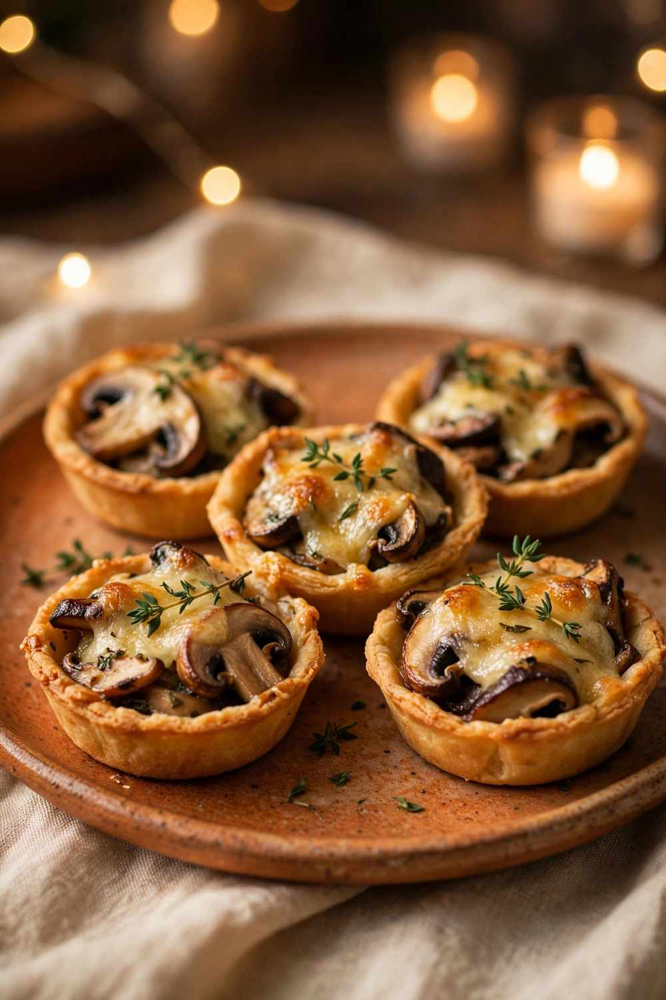
Buttery puff pastry squares press into a mini muffin tin and bake with a filling of mushrooms cooked down with thyme and butter, topped with nutty melted Gruyère. The shells turn crisp and golden while the filling stays rich and earthy. They are warm, savory, and elegant, the kind of bite that makes a party table feel like a celebration.
Ingredients
- 1 sheet puff pastry
- 2 cups sliced mushrooms
- 1 cup shredded Gruyère
- 2 tbsp butter
- 1 tsp thyme
- 1 egg for wash
Directions
- Preheat the oven to 375°F and lightly grease a mini muffin tin.
- Melt the butter in a large skillet over medium heat and add the sliced mushrooms and thyme.
- Cook the mushrooms, stirring often, for 8 to 10 minutes, until they release their moisture and turn dry and golden brown. Season lightly with salt and pepper and let them cool slightly.
- Roll out the puff pastry on a lightly floured surface and cut it into squares large enough to line the cups of the mini muffin tin.
- Press each square gently into a cup, letting the corners stick up slightly.
- Spoon a little of the cooked mushrooms into each pastry cup and sprinkle the shredded Gruyère over the top.
- Beat the egg and brush it over the exposed pastry edges. Bake for 15 minutes, until the pastry is puffed and golden and the cheese is melted and bubbling. Let them cool for 5 minutes before serving.
22. Melon and Prosciutto Skewers
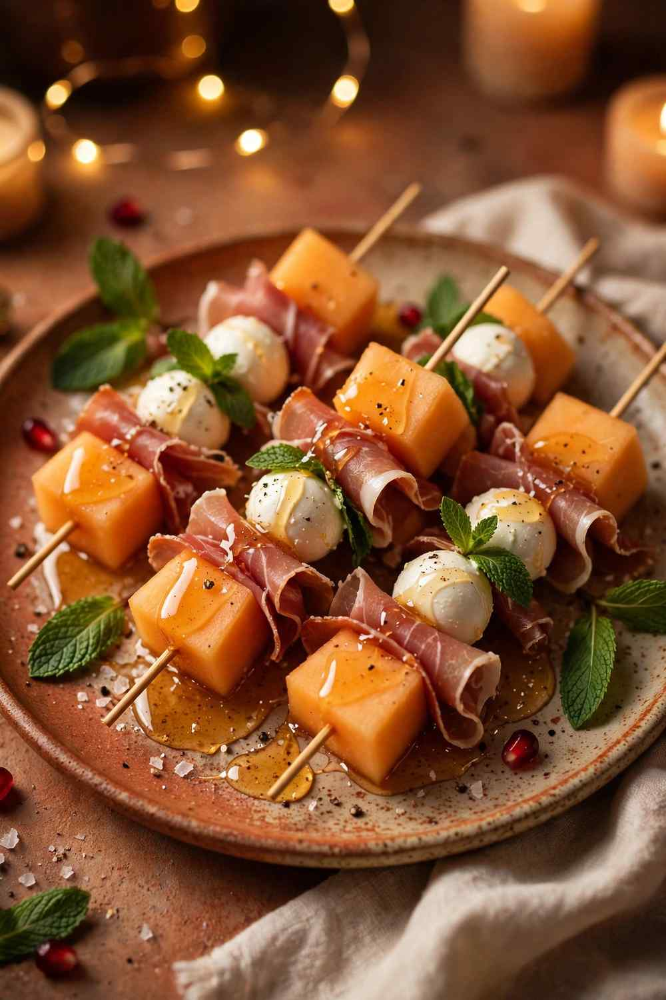
Sweet cantaloupe balls, salty folds of prosciutto, and creamy bocconcini thread onto skewers with a mint leaf and a light drizzle of honey. They need no cooking at all, just a few minutes of assembly and a chill in the fridge. They are fresh, cool, and sweet-salty, the no-cook bite that balances all the rich, baked food on the New Year's Eve table.
Ingredients
- 1 cantaloupe, cut into balls
- 8 oz prosciutto
- 1 cup bocconcini
- fresh mint leaves
- 1 tbsp honey
Directions
- Cut the cantaloupe in half, scoop out the seeds, and use a melon baller to scoop the flesh into balls. If you do not have a melon baller, cut the flesh into bite-size cubes.
- Tear or cut the prosciutto into strips wide enough to fold neatly.
- Drain the bocconcini well and pat them dry with paper towels.
- Thread one melon ball, one folded strip of prosciutto, and one bocconcini onto each skewer, in that order, so each skewer has one of each.
- Tuck a fresh mint leaf onto each skewer, next to the melon.
- Arrange the skewers on a serving platter and drizzle the honey lightly over them.
- Cover and chill until serving time, so the melon stays cold and the flavors settle. Serve chilled.
23. Dill Pickle Roll-Ups
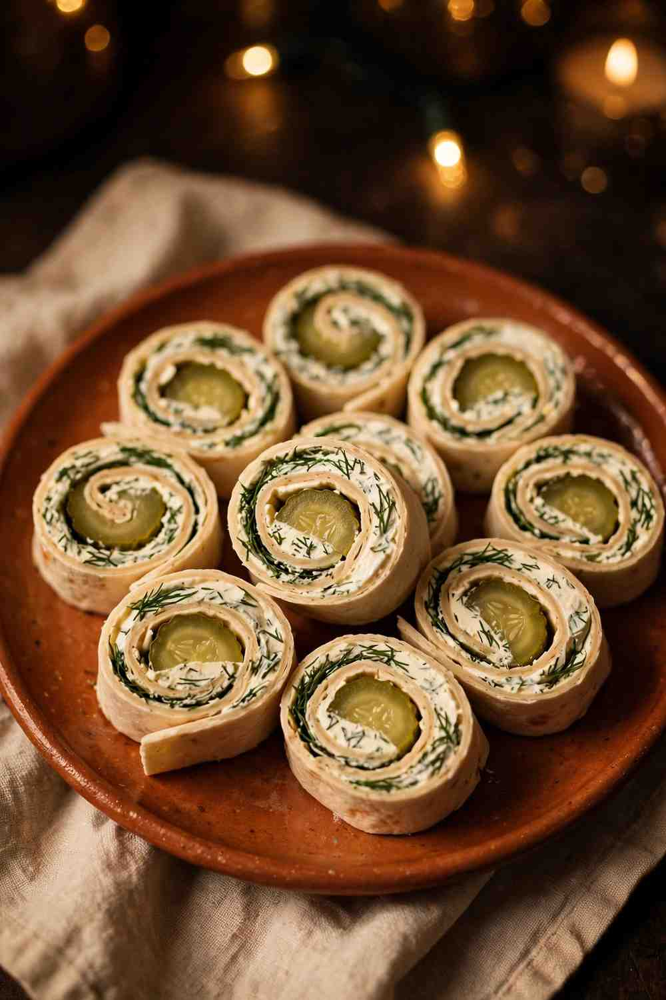
Deli ham spread with softened cream cheese and fresh dill rolls up tightly around a whole dill pickle, chills until firm, and slices into neat pinwheels. Each slice shows a spiral of pink ham, white cream cheese, and green pickle, creamy and tangy in one bite. They are cold, crunchy, and quick, and they hold up beautifully on a party platter for hours.
Ingredients
- 8 oz cream cheese, softened
- 8 slices deli ham
- 8 whole dill pickles
- 1 tbsp chopped dill
Directions
- Stir the chopped dill into the softened cream cheese until it is evenly mixed.
- Lay the ham slices flat on a cutting board or a sheet of plastic wrap.
- Spread a thin, even layer of the dill cream cheese over each ham slice, all the way to the edges.
- Pat the dill pickles dry with paper towels, then place one pickle at one short end of each ham slice.
- Roll the ham tightly around the pickle, pressing gently as you go so the roll holds its shape. Wrap each roll in plastic wrap.
- Chill the wrapped rolls in the refrigerator for 30 minutes, until firm.
- Unwrap the rolls and slice each one crosswise into 4 or 5 pinwheels. Arrange cut side up on a platter and serve chilled.
24. Grape Jelly Cocktail Meatballs
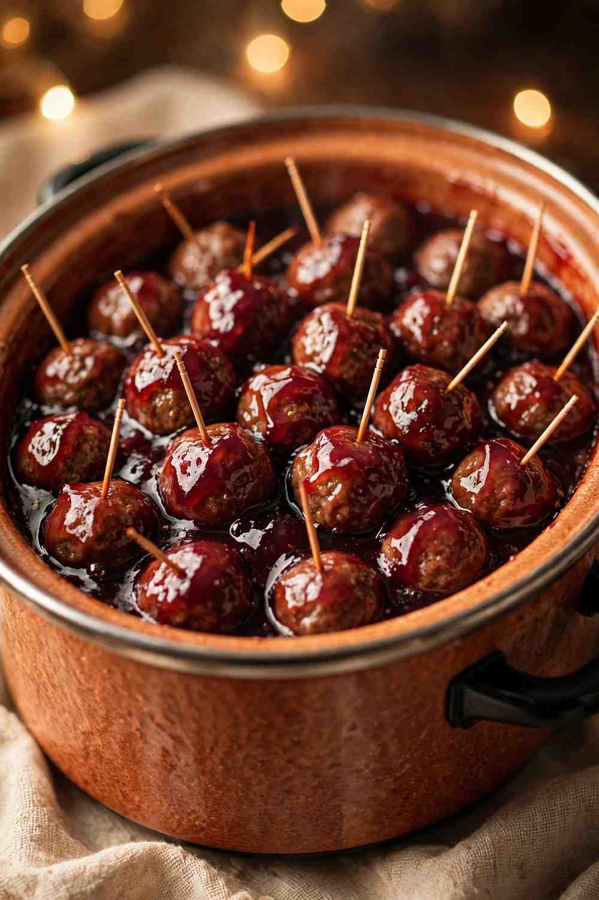
Frozen meatballs simmer in a slow cooker in a sauce of grape jelly, chili sauce, and Worcestershire until they are steaming hot and coated in a sweet, sticky glaze. It is the retro party favorite that never fails, sweet and tangy at once, and the slow cooker keeps them warm all evening so guests can help themselves right up to midnight.
Ingredients
- 1 lb frozen meatballs
- 1 cup grape jelly
- 1 cup chili sauce
- 1 tbsp Worcestershire sauce
Directions
- Spoon the grape jelly, chili sauce, and Worcestershire sauce into the slow cooker.
- Stir the sauce together and cook on high for 20 to 30 minutes, stirring once or twice, until the jelly has melted and the sauce is smooth.
- Add the frozen meatballs to the slow cooker and stir gently until they are coated in the sauce.
- Cover and cook on low for 2 hours, stirring once halfway through, until the meatballs are heated all the way through and the sauce has thickened slightly.
- Turn the slow cooker to warm and leave the lid on so the meatballs stay hot for serving.
- Taste the sauce and add a pinch of salt if needed.
- Serve warm straight from the slow cooker, with toothpicks alongside for spearing.
Food safety: heat the meatballs until steaming hot throughout.
25. Mini Lobster Rolls

Sweet cooked lobster meat tosses with mayonnaise, lemon juice, and finely diced celery, then piles into buttered mini buns toasted until golden. Each roll is buttery, bright, and full of tender lobster, the most luxurious bite on the table. They come together in minutes and should be filled just before serving, while the buns are still warm.
Ingredients
- 1 lb cooked lobster meat
- 1/4 cup mayonnaise
- 1 tbsp lemon juice
- 1 celery stalk, finely diced
- 8 mini hot dog buns
- 2 tbsp melted butter
Directions
- Cut the cooked lobster meat into bite-size chunks, about 1/2 inch across, and place it in a large bowl.
- Add the mayonnaise, lemon juice, and finely diced celery to the lobster.
- Toss gently until the lobster is lightly coated, keeping the pieces as whole as you can. Season with a pinch of salt and pepper.
- Brush the insides of the mini hot dog buns with the melted butter.
- Toast the buns in a hot skillet or under the broiler, buttered side down, for 1 to 2 minutes, until golden brown. Watch them closely so they do not burn.
- Spoon the lobster mixture generously into each warm bun, mounding it slightly over the top.
- Serve right away, while the buns are warm and crisp and the lobster is cool and fresh.
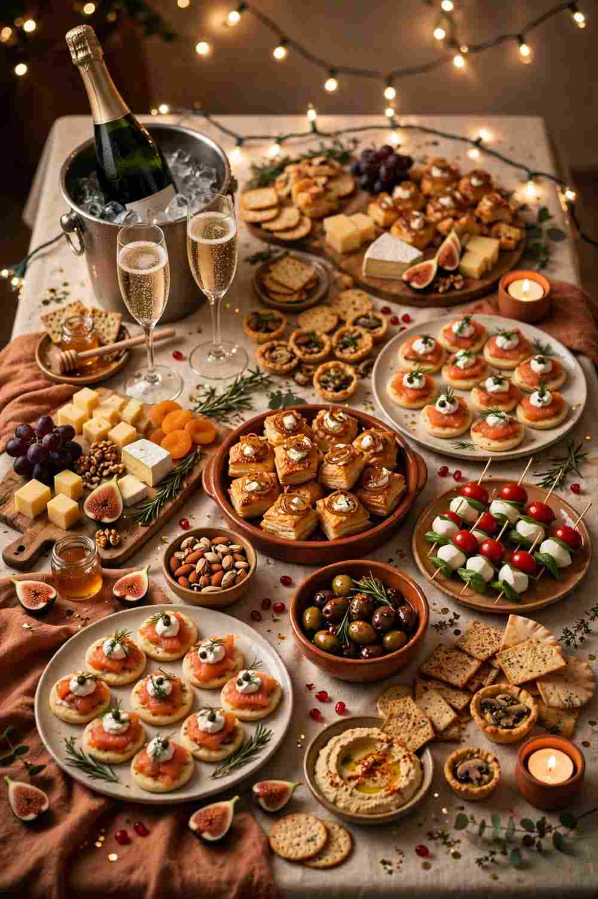
Make-ahead & serving tips
Make the dips a day ahead — buffalo chicken dip, seven-layer taco dip and jalapeño popper dip all keep well covered in the fridge, and the layered dip only gets better overnight. Start the grape jelly meatballs in the slow cooker in the afternoon and leave them on warm until midnight. Bake the hot bites — wings, poppers, sliders and tartlets — in batches as guests arrive, and keep finished trays warm on a low oven rack. Set out toothpicks, small plates and napkins at both ends of the table so nobody has to cross the room, and put a little card next to anything with nuts, shellfish or spice so guests with allergies can choose easily. Most leftovers keep covered in the fridge for up to 3 days.
Related articles
More roundups from the same table:
- 35+ Easy Christmas Appetizers for a Crowd — dips, bites, cheese boards and warm starters for your holiday party.
- 30+ Christmas Cookie Recipes Everyone Will Love — classic, chocolate, spiced, filled and decorated cookies.
- 25+ Christmas Side Dishes for Your Holiday Table — roasted vegetables, creamy potatoes, stuffing and cranberry sauce.
- 25+ Christmas Snowball Cookie Recipes — buttery snowball cookies in every flavor.
Keep exploring
- Browse the Appetizers & Snacks roundups — starters, party bites and snacks for every gathering.
- Browse all six categories — breakfast, lunch and dinner, desserts, air fryer, healthy recipes, and appetizers.
- More about the kitchen — what The Tasty Recipe Co is and how it works.
About The Tasty Recipe Co: Learn how we research, organize and review our food collections — see our About Us and Editorial Policy pages.
Recipe results can vary with ingredients, equipment, and technique. See our Disclaimer for food-safety and allergy notes.